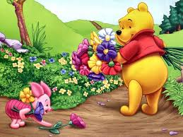

Winnie The Pooh
Winnie-the-Pooh, also called Pooh Bear, is a fictional anthropomorphic bear created by A. A. Milne. The first collection of stories about the character was the book Winnie-the-Pooh (1926), and this was followed by The House at Pooh Corner (1928). Milne also included a poem about the bear in the children’s verse book When We Were Very Young (1924) and many more in Now We Are Six (1927). All four volumes were illustrated by E. H. Shepard. (Hyphens in the character's name were dropped by Disney when the company adapted the Pooh stories into a series of features that became one of its most successful franchises.) The Pooh stories have been translated into many languages, including Alexander Lenard's Latin translation, Winnie ille Pu, which was first published in 1958, and, in 1960, became the only Latin book ever to have been featured on The New York Times Best Seller list.[1] In popular film adaptations, Pooh Bear has been voiced by actors Sterling Holloway, Hal Smith, and Jim Cummings in English and Yevgeny Leonov in Russian.